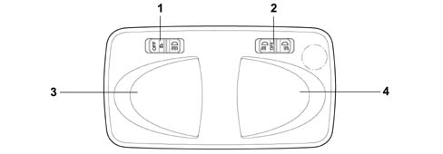
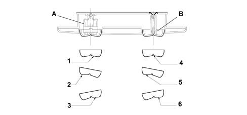
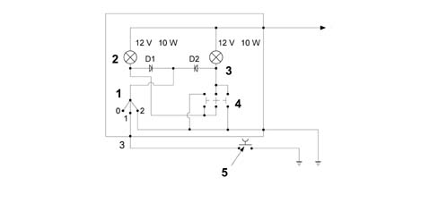

7040E INTERIOR COURTESY LIGHT SYSTEM
- Path
- Descriptions > 70 FITTINGS > 7040 BODY INTERIOR UPHOLSTERY AND TRIM > 7040E INTERIOR COURTESY LIGHT SYSTEM
- Kind
- system description
- Applies to
- all engines; all production periods
- Interactive page
- https://sloeber94.github.io/elrnDB-fDbl/en/#/2582360
Applies to: all engines; all production periods
LOCATION OF COMPONENTS ON VEHICLE

1 Front courtesy light
Pin - out
Connector A
Pin | Description |
|---|---|
relay | Earth |
relay | Direct battery supply |
3 | Timed control |
OPERATING PRINCIPLES
The front courtesy light has two timing strategies for the courtesy lights:
1 Vehicle entry stage:
- When the front doors are unlocked, using the key or the RF remote control, an initial courtesy light timer is activated for about 15 seconds.
- When one of the side doors is opened, a second courtesy light timer starts for a period of around 3 minutes, after which the courtesy light goes out and remains off until the next time one of the doors is opened again.
- If the door is closed during these 3 mins., a third timer comes on for 7s. This is interrupted if the panel ignition key is turned ON.
2 Vehicle exit stage:
- After having extracted the ignition key from the ignition switch, an initial period of 7 seconds is activated (if no more than two minutes have elapsed since the vehicle is switched off, after the opening of the one of the side doors, a second period of 3 minutes is activated.
- When the door is closed, as long as it takes place during this time interval, a third period of around 7 seconds is activated.
FRONT COURTESY LIGHT

1 Left courtesy light switch.
2 Right courtesy light switch
3 Left courtesy light
4 Right courtesy light
OPERATING PRINCIPLES
SWITCH POSITION A and B

A. Left courtesy light switch
B. Right courtesy light switch
1 Pos. 1 Courtesy light (door light)
2 Pos. 0 Courtesy light (off)
3 Pos. 2 Courtesy light (on)
4 Pos 0 Spot (off)
5. Pos. 1 Left spot (on)
6. Pos. 2 Right spot (on)
OPERATING PRINCIPLES
WIRING DIAGRAM

1 Courtesy light switch
2 Left spot
3 Right spot
4 Spot switch
5. Switch on door pillar